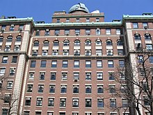

Pocasti
Mihajlo Pupin je bio:
- Predsednik Instituta radio inženjera 1917, SAD
- Predsednik Američkog instituta inženjera elektrotehnike 1925-1926.
- Predsednik Američkog društva za unapređenje nauke
- Predsednik Njujorške akademije nauka
- Član Francuske akademije nauka
- Član Srpske akademije nauka
Titule:
- Doktor nauka, Kolumbija Univerzitet (1904)
- Počasni doktor nauka, Džons Hopkins Univerzitet (1915)
- Doktor nauka Prinston Univerzitet (1924)
- Počasni doktor nauka, Njujork Univerzitet (1924)
- Počasni doktor nauka, Mulenberg Koledž (1924)
- Doktor inženjerstva, Škola primenjenih nauka (1925)
- Doktor nauka, Džordž Vašington Univerzitet (1925)
- Doktor nauka Union Koledž (1925)
- Počasni doktor nauka, Marijeta Koledž (1926)
- Počasni doktor nauka, Univerzitet Kalifornija (1926)
- Doktor nauka, Rudžers Univerzitet (1926)
- Počasni doktor nauka, Delaver Univerzitet (1926)
- Počasni doktor nauka, Kenjon Koledž (1926)
- Doktor nauka, Braun Univerzitet (1927)
- Doktor nauka, Ročester Univerzitet (1927)
- Počasni doktor nauka, Midlburi Koledž (1928)
- Doktor nauka, Univerzitet u Beogradu (1929)
- Doktor nauka, Univerzitet u Pragu (1929)

Posebno priznanje
U Americi je 1958. godine ustanovljeno odličje Medalja Mihajla Pupina, od strane Asocijacije polaznika Kolumbija inženjerske škole (Columbia Engineering School Alumni Association) koja se dodeljuje za "Izuzetne zasluge naciji u oblasti inženjerstva, nauke ili tehnologije" ("Distinguished Service to the Nation in Engineering, Science or Technology"). Na listi nosilaca ovog priznanja nalazi se i Edgar Huver (1961) nekadašnji direktor američkog Federalnog istražnog biroa (FBI).